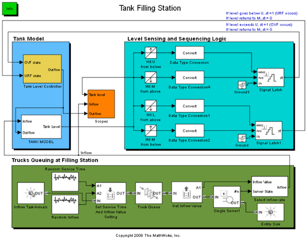
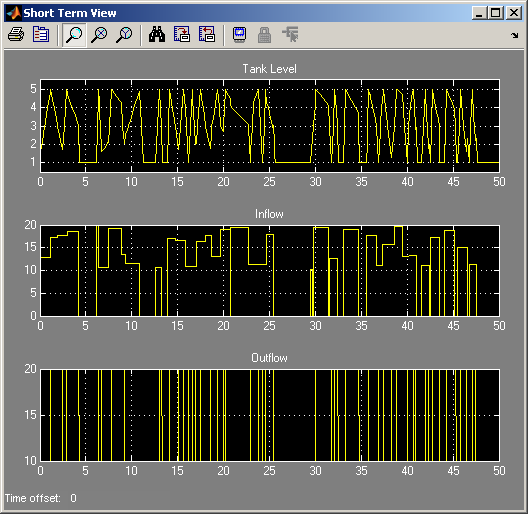
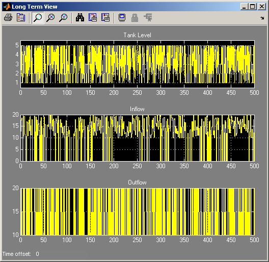

Tank Filling Station
Contents
Overview
This model contains a tank whose fluid level decreases as fluid flows out of the tank and increases when trucks fill the tank.
Fig 1: Tank Filling Station Model
Tank Level Controller
A controller (block named Tank Level Controller) aims to keep the tank's fluid level between a lower level, L, and an upper level, U. The controller responds to varying tank levels by changing its state and the tank outflow rate, as shown below in Table 1. The number M is a middle level. In this model, L=1 < M=3 < U=5.
| Tank Level Threshold | State Change | Outflow Rate |
|---|---|---|
| L | Set URF = 1 (underflow) | 0 |
| M | When crossing M from below, set URF = 0 | 10 |
| When crossing M from above, set OVF = 0 | 10 | |
| U | Set OVF = 1 (overflow) | 20 |
Table 1: Tank Controller Policy
Trucks Queuing at the Filling Station
Trucks arrive to fill the tank and wait in a queue. Each truck has attributes that specify the tank inflow rate and the truck's service time. The tank inflow rate equals
- The truck's Inflow attribute, while the truck is at the filling station.
- Zero, when no truck is present.
In this model, the trucks' interarrival times are exponentially distributed with mean 1.2 hours. Their service times are beta distributed between 0.75 and 1.25 with shape parameters equal to 1. Their Inflow attributes are uniformly distributed between 10 and 20.
Results and Displays
Plots (Figs 2, 3 and 4) display the following simulation results:
- Tank level throughout the simulation
- Short-term view of the system (tank level, inflow and outflow)
- Long-term view of the system (tank level, inflow and outflow)
Fig 2: Tank Level (Simulation Result)
Fig 3: Short-Term View of the System (Simulation Result)
Fig 4: Long-Term View of the System (Simulation Result)